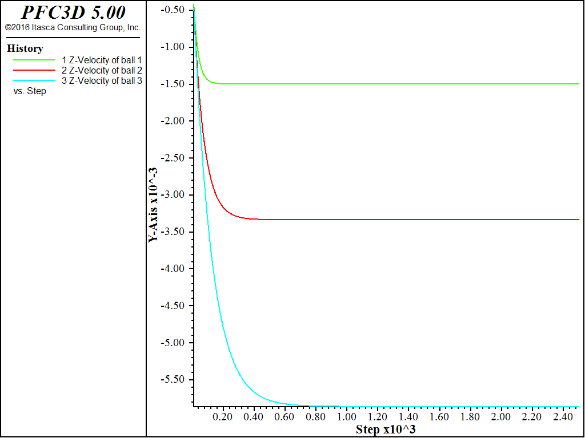

单向流体耦合
对于某些问题，采用某种形式的单向 耦合是可取的。在单向耦合中，颗粒受 流体影响，但流体不受颗粒影响。CFD 模块支持此类建模。基本过程 如下。
- 读取流体网格。
- 设置流体密度和黏度。
- 设置流体速度。
- 求解或循环计算。
问题描述
三个半径分别为 1、1.5 和 2 mm、密度为 2000 kg/m3 的颗粒在密度为 1000 kg/m3、黏度为 1.5 Pa s 的静止流体中于重力作用下沉降。
解析解
球形颗粒在黏性流体中于重力作用下沉降时的 运动方程为
其中 \(g\) 为重力加速度，\(\rho_p\) 和 \(f\) 分别为颗粒密度与流体密度，\(u_z\) 为 沉降颗粒的竖直速度，\(C_d\) 为曳力 系数。曳力系数 \(C_d\) 是 颗粒雷诺数的函数。
当下落球颗粒达到稳定速度时，\(du_z \over dt\) 变为零。由此可以写出
已有研究表明，对于较小的雷诺数，曳力 系数简单地取为（[Batchelor1967]）
其中 \(Re_p\) 为颗粒雷诺数，其定义为
采用 \(C_d\) 的这一定义，方程 (1) 可精确 求解，从而得到 Stokes 定律：
实现
下方列出的文件 one_way_cfd.p3dat 驱动此算例。
model new
model large-strain on
model title 'One-way CFD coupling example'
model domain extent -1 2 -1 2 0 2 condition periodic
contact cmat default model linear
model mechanical timestep max 1e-5
wall generate name 'cell1' box 0 1 0 1 0 1
wall delete walls range set name 'cell1Bottom'
wall delete walls range set name 'cell1Top'
wall generate name 'cell2' box 0 1 0 1 1 2
wall delete walls range set name 'cell2Bottom'
wall delete walls range set name 'cell2Top'
wall property 'kn' 1e2 'ks' 1e2 'fric' 0.25
model gravity 0 0 -9.81
ball create radius 0.001 position-x 0.5 position-y 0.3 position-z 1.5
ball create radius 0.0015 position-x 0.5 position-y 0.5 position-z 1.5
ball create radius 0.002 position-x 0.5 position-y 0.7 position-z 1.5
ball attribute density 2000.0
ball property 'kn' 1e2 'ks' 1e2 'fric' 0.25
model configure cfd
cfd read nodes 'Node.dat'
cfd read elements 'Elem.dat'
cfd buoyancy on
element cfd attribute density 1000.0
element cfd attribute viscosity 1.5
element cfd attribute velocity-x 0.0
element cfd attribute velocity-y 0.0
element cfd attribute velocity-z 0.0
fish define set_fluid_velocity
loop foreach local ele element.cfd.list
element.cfd.vel.x(ele) = 0.0
element.cfd.vel.y(ele) = 0.0
element.cfd.vel.z(ele) = 0.0
end_loop
end
[set_fluid_velocity]
ball history velocity-z id 1
ball history velocity-z id 2
ball history velocity-z id 3
model cycle 2500
ball list attribute velocity
program return
使用 配置 CFD 模型命令（model configure cfd） 命令加载 CFD 模块后，
将计算流体-颗粒相互作用力并将其施加
到颗粒上。
结果
这三个不同的颗粒达到三个不同的终端 速度。这是意料之中的，因为终端速度由 与颗粒半径的平方成正比的曳力同与颗粒 半径的立方成正比的重力之间的平衡所控制。
PFC 颗粒的终端速度分别为 -1.50、-3.33 和 -5.86 mm/s。Stokes 定律 (5) 预测的终端速度为 -1.45、 -3.27 和 -5.81 mm/s。PFC 预测的终端 速度略高于 Stokes 定律，这是因为 PFC 中采用的曳力系数公式计入了动量效应。


图 1：球颗粒速度的历史（z 分量）
| [Batchelor1967] | G.K. Batchelor，《流体动力学导论》（An Introduction to Fluid Dynamics），Cambridge University Press，Cambridge，1967 年。 |
| 这些内容对您有帮助吗？… | FLAC3D © 2019, Itasca | 原文更新于 2020 年 10 月 8 日 |
| 版权与免责声明 | ||